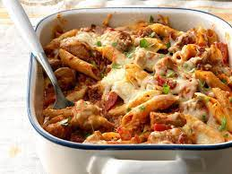
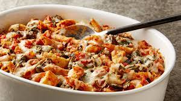

Chicken Penne Casserole


Chunks of chicken in a creamy tomato
sauce with basil and fresh spinach are
baked with multi-grain penne pasta and topped with cheese.
Ingredients
- 1-1/2 cups uncooked penne pasta
- 1 tablespoon canola oil
- 1 pound boneless skinless chicken thighs, cut into 1-inch pieces
- 1/2 cup chopped onion
- 1/2 cup chopped green pepper
- 1/2 cup chopped sweet red pepper
- 1 teaspoon dried basil
- 1 teaspoon dried oregano
- 1 teaspoon dried parsley flakes
- 1/2 teaspoon salt
- 1/2 teaspoon crushed red pepper flakes
- 3 garlic cloves, minced
- 1 can (14-1/2 ounces) diced tomatoes, undrained
- 3 tablespoons tomato paste
- 3/4 cup chicken broth
- 2 cups shredded part-skim mozzarella cheese
- 1/2 cup grated Romano cheese
Procedure
- Preheat oven to 350°. Cook pasta according to package
directions. Meanwhile, in a large saucepan, heat oil
over medium heat. Add chicken, onion, peppers and seasonings;
saute until chicken is no longer pink. Add garlic; cook 1 minute longer.
- In a blender, pulse tomatoes and tomato paste,
covered, until blended. Add to chicken mixture.
Stir in broth; bring to a boil over medium-high heat.
Reduce heat; cover and simmer until slightly thickened, 10-15 minutes.
- Drain pasta; toss with chicken mixture.
Spoon half of the mixture into a greased 2-qt.
baking dish. Sprinkle with half of the cheeses. Repeat layers.
- Cover and bake 30 minutes. Uncover; bake until heated through, 15-20 minutes longer.
Click To Return